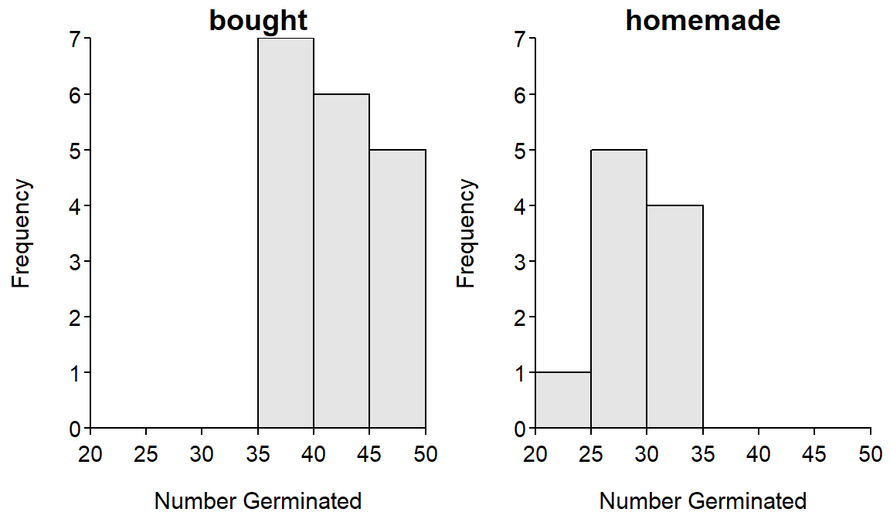

For all “hypothesis testing” questions, make sure to provide explicit answers with your work shown for all 11 steps of a hypothesis test.
The owner of a greenhouse developed a methodology to produce sterilized compost for growing plants that was cheaper than the compost she could buy while also allowing her to reduce waste production. However, these benefits could be offset by losses related to poor plant germination and growth. Thus, the owner attempted to answer the queston about germination success by planting 50 seeds of marigolds (Tagetes spp.) into individual containers that were filled with either the home-made sterilized compost or store-bought compost. The containers were randomly filled with one type of compost and were randomly placed into a large greenhouse where all environmental conditions were controlled. After five days, the number of (the 50) seeds in each container that had germinated was recorded. The results are shown below.
compost n mean sd min Q1 median Q3 max
1 bought 18 42.67 4.33 36 39.00 42.5 45.50 50
2 homemade 10 28.90 3.21 24 27.25 28.0 31.75 33Levene's Test for Homogeneity of Variance (center = median)
Df F value Pr(>F)
group 1 1.4387 0.2412
26 
Use this information to determine, at the 1% level, if the number of seeds that germinated was lower in the home-made compost.1 [NOTE: you are testing if the germination rate was lower in the home-made compost because that would suggest that it performs worse – fewer germinated plants – than the other compost and would increase costs to the greenhouse.]
A researcher constructed a survey to determine an individual person’s “commitment to adult animals.” Each survey is summarized to a single number that measures that individual’s “commitment”, with larger numbers representing “greater commitment.” The researcher wanted to determine if the mean “commitment” according to this measure was greater for people who evacuated all or some of their pets versus those who did not evacuate any pets during a propane tanker derailment in Weyauwega, WI in 1996. The table below shows the results for the “commitment” measure for 116 individuals that evacuated all or some of their pets (i.e., DidEvac) and for 125 individuals that evacuated none of their pets (i.e., NoEvac).
Variable n Mean Median StDev SE Mean Min Max Q1 Q3 DidEvac 116 7.694 7.658 3.410 0.317 -0.863 14.763 5.035 10.204 NoEvac 125 6.640 6.599 3.102 0.277 -1.214 14.444 4.568 8.696 Levene's p=0.678
Use these results to examine the researcher’s hypothesis at the 1% significance level.
This question was adapted from McClave et al. (1998) First Course in Business Statistics.↩︎